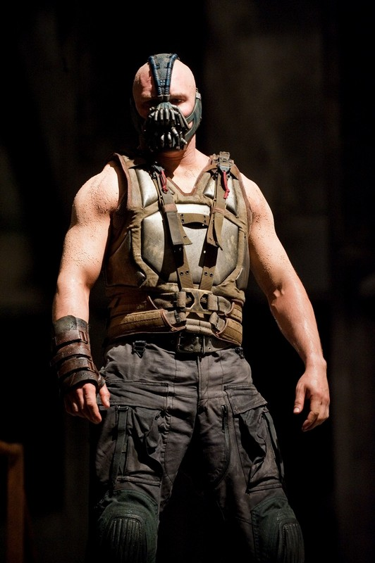

El personaje suele ser representado como un adversario del superhéroe Batman y pertenece al colectivo de enemigos que conforman su galería central de villanos. Al poseer una mezcla de fuerza bruta e inteligencia excepcional, a Bane a menudo se le atribuye ser el único villano que ha "roto al murciélago" tanto física como mentalmente. También es hijo de otro de los enemigos de Batman, Rey Serpiente.